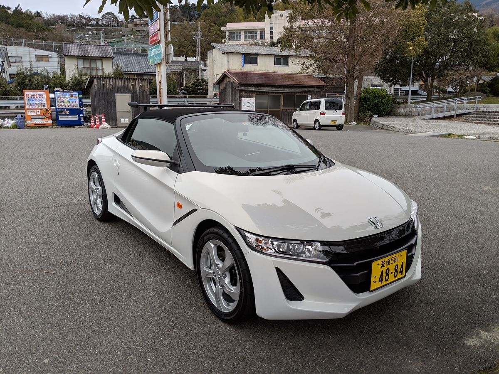

3月25日：S660 が納車されました
公開日：
この前衝動買いした S660 がようやく納車されました。
最初は3月9日が納車日だったのですが、2週間余り遅れちゃいました。
だるカーはもう納車されない
— しばやん (@shibayan) March 16, 2019
だるカー、未確認で進行形
— 蜜葉 (@mitsuba_yu) March 16, 2019
だるカー、概念になりつつあるよ
— if 文を華麗に操るだるやなぎ (@daruyanagi) March 6, 2019
もう納車されないんじゃないかと心配しましたが、一安心です。
だるカー、非実在自動車だとばかり……
— さくさん (@ch3cooh) March 25, 2019
だるカーはあったんだ!! pic.twitter.com/5LrFgQk7KY
— if 文を華麗に操るだるやなぎ (@daruyanagi) March 25, 2019
ホンダのディーラーさんには記念撮影してもらうわ、お花をいただくわで、なんか面はゆい感じ（ありがとうございます！）。写真はフォトスタンドに入れてもらったので、書斎にでも飾っておこうかと思います。
だるカーのスペック
いつの間にか だるカー という愛称が定着してしまいましたが、彼のスペックはこんな感じです。
- S660 ベータ（2018年式、JW5）
- ホワイト、6速MT
- メーカーオプション：なし
- ディーラーオプション：トップキャリア、ETC
買ったときはローンを組みたくなかった（フリーランスなので通らない恐れがある）ので、グレードとオプションはかなり抑えめです（価格は乗り出しで 240万弱）。その代わりに、社外品のナビ＋デジタルルームミラー（納車時取り付け）と、iPad mini ホルダーを装着しています。
だるカーのシステム pic.twitter.com/kZJihISI8n
— if 文を華麗に操るだるやなぎ (@daruyanagi) March 25, 2019

どちらも使い勝手は上々で、なかなかいい買い物をしたと思います（詳細はもう少し使い込んでから改めて紹介したいと思います）。とくにデジタルルームミラーは、後方視界のあまりない S660 にはピッタリ、というかマストなアイテムだと思いますね。
トップキャリアは、ソロでキャンプに行きたかったので付けてもらいました。耐荷重が 10kg しかないので大して荷物を積めませんが、助手席を荷物で埋めるよりはいいでしょう。
トップキャリアがダサいか否かは人次第やな。まぁ、最悪とれる pic.twitter.com/Gn8xNo7fT9
— if 文を華麗に操るだるやなぎ (@daruyanagi) March 25, 2019
ちなみに、このキャリアは取り外すことも可能です（要工具）。ボディに穴をあけて設置するのですが、取り外したあと、穴を埋めるためのキャップ（？）も付属します。
ちょっと走らせてみた
3時過ぎに納車されたあとは、用事を済ますために街中を流しました。久しぶりの MT はちょっと緊張しましたが、ボディがコンパクトなので取り回しが楽なのは助かる。松山市は路面電車が走ってるのですが、線路をまたぐ程度であればそれほどショックはありません。乗り心地が固いとは聞いていましたけれど、まぁ、むかしビートに乗っていたこともあり、それに比べると大したことはないなと思います（最近のクルマが快適すぎるんだろうね？）。

そのあとは、海沿い（青春18きっぷのポスターなんかで有名な、下灘駅とかがある方ですね！）を走りました。周りにあわせて 3,000 回転ぐらいでだるだると運転していたのですが、ガチャガチャとギアを変えながら走ってるだけでも結構楽しい。あいにくの曇り空でルーフをあけることはできなかったのですが……それはまた今度。
その日は大洲に安いビジネスホテルをとり、翌朝早く、今度は高速道路に乗ってみました。わざわざそうしたのは、クルマの少ない時間にいろいろ試してみたかったからなのですが……行きではあまり感じなかった、エンジンのよさが味わえました。確かに NBOX にも搭載されているという普通のエンジンなのですが、ぐおおぉぉぉと呻ったり、ぶしゅー、ぷしゅーと息を抜いたりするのが背中から聞こえるのは結構楽しい。加速も期待していた以上で、6速 MT のおかげか、高速巡航にもまったく問題がない。トップスピードは軽自動車なのでそれなりなんだろうけど、法定速度内であれば回りに追いつけないってことはないですね。まぁ、実際はあんまり飛ばす気もないですけど、ポテンシャルは把握しておきたかった。
とにかく、ぼっちのおっさんが寂しい週末を埋めるには最高のクルマだと思います。